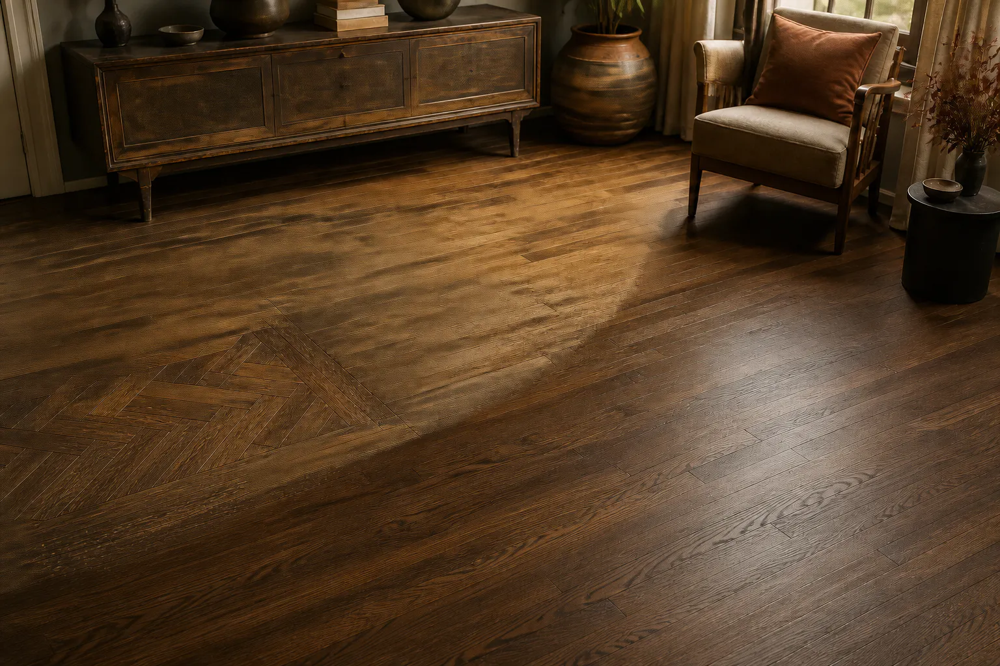
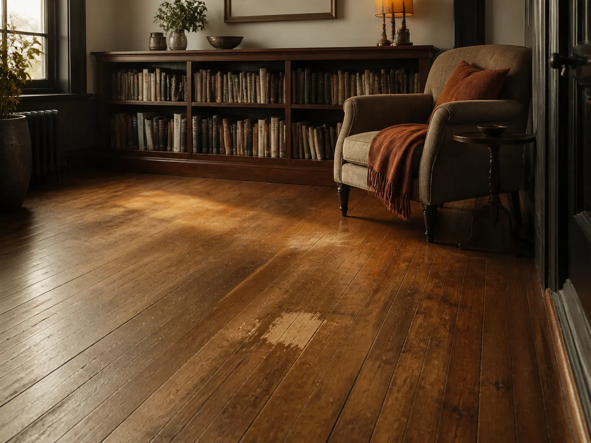
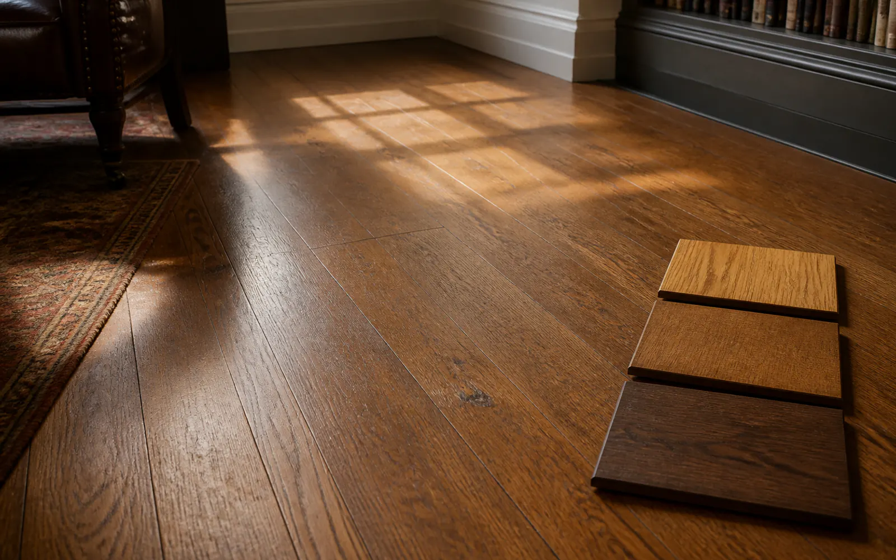

Repair & Refinishing
Start with what exists. Explore who can help restore it.
Describe the existing floor, visible concerns, and the result you are considering. We may introduce your request to independent local flooring providers.
A provider evaluates the property and determines whether repair, refinishing, partial replacement, or another approach may be appropriate.

02 / Project Situations
Existing floors can raise different questions.
Repair and refinishing conversations often begin with visible wear, a localized concern, or uncertainty about what can be preserved.
A provider can review the existing floor and discuss project-specific options.

-
Surface wear
Exploring scratches, dull finish, discoloration, or general signs of use.
-
Localized damage
Describing a specific board, edge, transition, or limited damaged area.
-
Refinishing questions
Considering whether an existing wood floor may be refreshed or refinished.
Independent providers evaluate conditions and determine whether repair, refinishing, replacement, or another approach may be appropriate.
03 / What Shapes the Project
The existing floor tells part of the project story.
Material, wear, previous finishes, and localized concerns can all shape a repair or refinishing conversation.
Describe what you can see. A provider evaluates the floor and discusses project-specific options.

-
Floor type
Solid wood, engineered wood, and other surfaces may call for different conversations and limitations.
Share: known material or “not sure” -
Visible condition
Scratches, dull finish, gaps, stains, movement, or damaged boards help describe the starting point.
Share: location + visible concern -
Previous work
Earlier coatings, repairs, sanding, or partial replacement may be relevant to what a provider reviews.
Share: known finish or repair history -
Desired result
The goal may be a refreshed appearance, localized repair, color change, or guidance on whether replacement should be considered.
Share: preferred outcome + general timing
You do not need to decide the solution before requesting a conversation.
Share the visible condition and the result you are considering. Independent providers evaluate the property and determine their own recommendations, estimates, scope, and terms.
Condition assessment
Repair or replace
04 / From Request to Conversation
A simple request. A more useful conversation.
Share the project details you know. The platform may introduce your request to independent providers who decide whether to respond.
No guaranteed response, estimate, recommendation, or project outcome.
How the Request Moves
-
Share the project
Describe the rooms, current surface, project direction, ZIP code, and general timing.
-
Request is organized
Your details create a clearer starting brief for possible provider conversations.
-
Continue with providers
Providers who respond discuss the property, recommendations, estimates, scope, and terms directly with you.
Ready to describe the floor as it appears today?
Start a repair or refinishing requestThe platform facilitates introductions. Independent providers determine their own services and terms.
05 / Before You Move Forward
Understand the proposed approach before the existing floor changes.
A useful conversation should explain the areas involved, expected result, limitations, timing, and terms.
Existing conditions can affect what is practical. Ask the provider to explain property-specific findings and alternatives.
Areas included
Which rooms, boards, edges, transitions, or damaged areas are included?
Proposed approach
Is the proposal for localized repair, refinishing, partial replacement, or a combination?
Finish & color
Which finish system, sheen, color direction, and sample approval process are proposed?
Limitations
Which marks, gaps, stains, color variation, or previous repairs may remain visible?
Access & timing
How will furniture, room access, drying or curing time, and return to use be handled?
Estimate & terms
What is included, excluded, conditional, or subject to change after further review?
The platform facilitates introductions. Independent providers determine their own recommendations, estimates, scope, services, and terms.